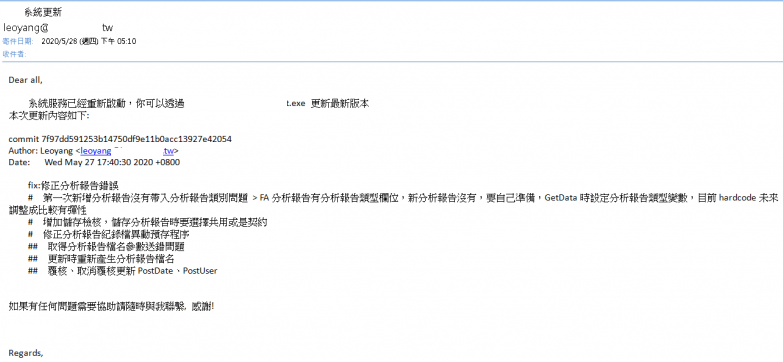
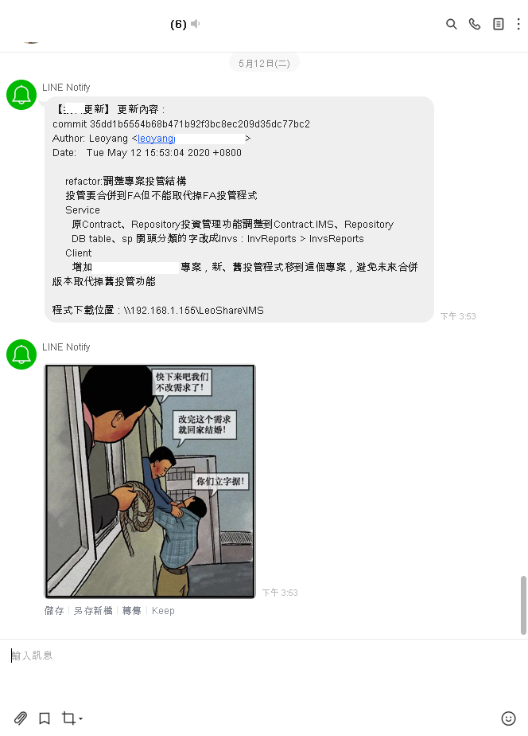

透過GitHook Prepush機制，Push時部屬程式 環境準備
Git
Python
準備githook - Prepush git hook 機制可以讓我們在commit、pull、push….e.t.c.時執行特定的動作，例如執行測試、寄信通知更新、檢查編譯是否通過等……hen方便
在開發的專案下，githook目錄中把pre-prepush.sample副檔名移除 > pre-push
*盡量用改的，因為githook裡面有一些特殊的編碼，如果自己寫可能會有問題
路徑 : Project\ProjectName.git\hooks\
在prepush中增加下面內容，也可以視情況移除掉不需要的指令或是更改路徑、命名
1 2 3 4 5 6 7 8 9 10 11 12 13 14 15 16 17 18 19 20 21 22 23 24 25 #!/bin/sh # 取得最後一次commit內容到文字檔 git log -n 1 > "D:\NeverRemove.txt" # 通知 ## Notify通知重啟服務 python .git/hooks/LineNotifyReboot.py ## Mail通知重啟服務 python .git/hooks/MailNotifyReboot.py # 停用服務 .git/hooks/StartOrStopService.exe # 備份 && 發布 .git/hooks/backup.bat # 啟用服務 .git/hooks/StartOrStop.exe # 通知 ## Notify通知更新完成 python .git/hooks/LineNotifyRelease.py ## Mail通知更新完成 python .git/hooks/MailNotifyRelease.py
準備通知程式 – 信件通知重啟程式 1 2 3 4 5 6 7 8 9 10 11 12 13 14 15 16 17 18 19 20 21 22 23 24 25 26 27 import jsonfrom email.mime.text import MIMETextimport smtplibgmailUser = 'yourmail@gmail.com' gmailPasswd = 'yourpassword' to = ['receiver1@gmail.com' , 'receiver2@gmail.com' , 'receiverˇ@gmail.com' ] emails = [t.split(',' ) for t in to] message = MIMEText('Dear all,\n\nOO系統服務將在幾分鐘內重新啟動，請盡快將正在操作的資料儲存避免資料遺失。\n如果有任何問題需要協助請隨時與我聯繫，感謝 !\n\nRegards,\n' , 'plain' , 'utf-8' ) message['Subject' ] = 'OO系統更新' message['From' ] = gmailUser message['To' ] = ',' .join(to) smtp = smtplib.SMTP("mail.com.tw:25" ) smtp.ehlo() smtp.starttls() smtp.login(gmailUser, gmailPasswd) smtp.sendmail(message['From' ], message['To' ], message.as_string()) print('Send mails OK!' )

– LineNotify通知重啟程式 1 2 3 4 5 6 7 8 9 10 11 12 13 14 15 16 17 18 19 20 21 import requestsimport sysdef lineNotifyMessage (token, msg, url) : headers = { "Authorization" : "Bearer " + token, "Content-Type" : "application/x-www-form-urlencoded" } payload = {'message' : msg, 'imageThumbnail' : url,'imageFullsize' : url} r = requests.post("https://notify-api.line.me/api/notify" , headers = headers, params = payload) return r.status_code f = open("D:/NeverRemove.txt" , "r" ,encoding="utf-8" ) message = "Dear all,\n\nOOO system service will be rebooted in a few minutes, please save important data to avoid data loss.\nIf you have any questions, please feel free to contact me, thank you!\n\n128 Leo\n\nRegards,\n" url = "https://e23882.github.io/img/maybe.PNG" token= 'yourlinenotifytoken'

準備備份、發布批次檔 backup.bat :
1 2 3 4 5 6 7 8 9 10 11 12 13 14 15 16 :: 產生備份目錄 set Date_folder=%date:~0,4%%date:~5,2%%date:~8,2%_%time:~0,2%%time:~3,2%%time:~6,2% :: 產生備份目錄 md "\\Server\備份\"%Date_folder% :: 備份 client 64/32bits xcopy "\\Server\Deploy" "\\Server\備份\"%Date_folder% /E /H /C /I /Y :: 備份 service xcopy "\\Server\ApServices" "\\Server\備份\"%Date_folder%"\Service" /E /H /C /I /Y :: 更新Client檔案 xcopy "D:\Backup\Project\bin\Debug" "\\Server\JepunShare_IMS\JepunIMSDeploy\32" /E /H /C /I /Y /exclude:D:\Backup\Project\.git\hooks\Exclude.txt xcopy "D:\Backup\Project\bin\Debug" "\\Server\JepunShare_IMS\JepunIMSDeploy\64" /E /H /C /I /Y /exclude:D:\Backup\Project\.git\hooks\Exclude.txt :: 更新服務 xcopy "D:\Backup\Project\Service\bin\Debug" "\\Server\Services" /E /H /C /I /Y /exclude:D:\Backup\Project\.git\hooks\Exclude.txt
Exclude.txt – 不複製檔案清單
完整程式碼